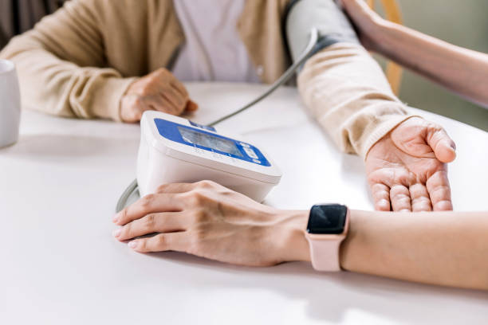

29 Abril, 2026
Los Derechos de las Personas Mayores
Acompañar significa reconocer, respetar y defender los derechos de cada persona mayor
Leer artículo completo
Explora artículos especializados para familias que buscan apoyo y profesionales que desean excelencia en la atención senior.

Acompañar significa reconocer, respetar y defender los derechos de cada persona mayor
Leer artículo completo
Dormir no es simplemente “descansar”: es un proceso biológico complejo y esencial. Durante el sueño, el cuerpo y el cerebro realizan funciones vitales
Leer más
Desde ADICIO, promovemos un abordaje clínico riguroso, preventivo y centrado en el vínculo con la persona y su entorno.
Leer más
Enfermedad del sistema nervioso central, caracterizada por una degeneración progresiva de las neuronas motoras en la corteza cerebral
Leer más
El control de la glucemia no es simplemente un número en una prueba; es un indicador del estado general de salud de una persona con diabetes
Leer másLa diabetes, también conocida como diabetes mellitus, es una enfermedad en la que los niveles de glucosa en sangre son demasiado altos
Leer más